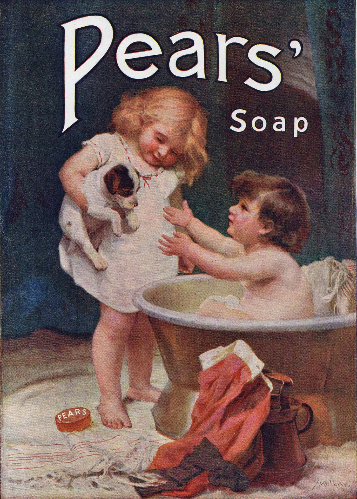

MAIN
Creating New Art Within The coding Framework
오달
지다
[형용사] 허술한 데가 없이
매우 야무지고 실속이 있다.

저는 이런 사람입니다.
- 안녕하세요.저는 웹퍼블리셔 & 프론트앤드의 프로패서녈한 모습으로 여러분들과 함께 IT계의 예술을 만들어 나가고 싶은 강지혜 입니다
- 저 강지혜는 명쾌하게, 트렌디하게 하지만 꽉차고 누구나 알수 있게 표현하는 것을 좋아합니다.
- 저 강지혜는 오랜 예술 활동으로 남다른 감각을 가지고 있습니다. 그 감각을 탄탄한 코드위에 감각적인 UI를 그려낼 수 있습니다.
- 저 강지혜는 '디자인은 깔끔하게, 하지만 기능은 꽉차게!'가 제가 가진 모토이자 마인드입니다.
- 저 강지혜는 트렌드하면서 깔끔하되 속이 꽉찬 알타리무처럼 오달진 웹퍼블리셔 프론트앤드를 꿈꾸고 있습니다.
- 또한 코드도 깔끔해서 누구든지 알아보기 쉽게, 그리고 간결하게 코드를 치는 것이 저의 목표로 계속 공부중에 있습니다.
- 신입 IT계의 웹퍼블리셔 강지혜, 잘부탁드립니다!
제가 잘하는 일을 소개합니다.
- 저는 포토샵, 일러스트레이터 ,html5, css3, Javascript, JQuery, php 잘 다룰줄 알며 php,리엑트까지 조금씩 다를 수 있습니다.
- 저는 모든 개발자나 알아 볼 수 있게 유지보수가 가능한 코드 짜는 것을 지향합니다.
- 한 편의 연극처럼 모든 팀원분들과 최고의 팀워크로 최상의 작업률을 이끌어 내려고 노력합니다!
- 늘 사용자가 제가 만든 것에 재미있고 편리하게 사용했으면 좋겠습니다.
- 반응형, 인터랙션 등 사용자에게 편하고 즐거운 UX 를 만드는게 저의 목표입니다.
- 학원에서 웹퍼블리셔&프론트앤드 과정을 배우면서 디자인적인 배움의 목마름으로 일러스트 과정도 추가해서 수료했습니다.저의 배움은 항상 늘 목말라 있습니다.
- 꽃보다 할배에서 80이 넘으신 이순재선생님께서 처음 가보신 그 나라의 말을 공부하신 것처럼, 게으른것을 멀리하며 평생 배움의 자세로 임하겠습니다